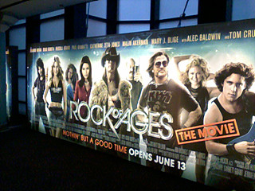
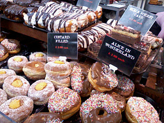
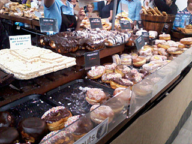
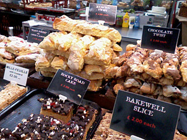
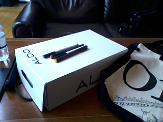
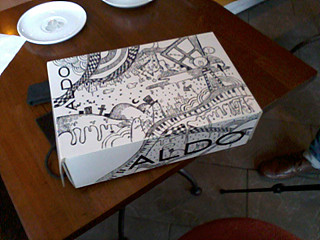
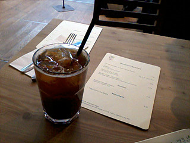
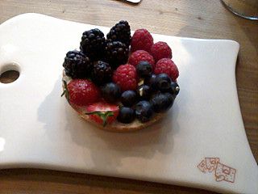
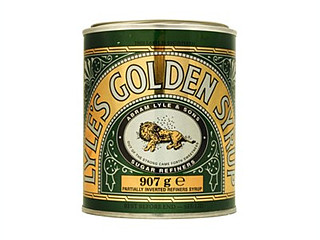

목요일
Rock of ages 영화봤다
드디어 공사가 끝난 피카딜리 - 레스터스퀘어 사이
가뜩이나 미어터지는 장소에
공사까지 해서 작년내내 스트레스 와방이었는데
이래 깨끗하게 정리된걸 보니 기분좋다 ;ㅂ;

영화시작이 6.30pm이라
일끝나고 사무실에서 둥개거리고있었는데
같이 남아있던 K씨가 선물이라며 테스코 봉다리를 내밀더라
그리고 그 안에 들은건 감자 한봉다리 ㅡㅡ;;;;
것도 황금색;;;;;;;;
전에 무슨 프로젝트때문에 감자를 사와서
황금색(........;;;;)으로 칠한게 있는데
그럼 감자 한두개만 사오면 될걸
누가 테스코에서 한 봉다리를 사왔더랬다 ㅡㅡ;;;;
집에가서 카레해먹으라믄서 사진촬영마치고 몽땅 날 준거임 ㅋㅋㅋㅋ
황금색 감자 2~3개 + 보통감자 한봉다리가 내손에 주어진상황;;
가........감샤;;
덕분에 감자 한봉다리 안고 영화관 갔다^^;;;
영화는 걍 두시간동안 깔깔거리면서 볼수있는정도
따지고 들자면 (안좋은쪽으로)할말이 제법 있는영화인데
오프닝 노래가 건즈고
초반 타워레코드신 배경음악이 Skid Row의 I remeber you 인데
뭐가 더 필요하리 ;ㅂ; 어메 추억이 새록새록 ;ㅂ;
토요일



마켓에서 발견한 베이커리
뭔가 크기가 다 어마무지했음
가격도 무지 싸고 생긴것도 대따 맛나보여서
티라미슈랑 데니쉬를 하나씩 샀는데
대실패.............OTL
이 비쥬얼과 맛의 갭은 무엇이란말인가;;;
초코데니쉬를 샀는데 초코맛이 안나;;;;;;
티라미슈도 너무 퍽퍽하고 ;ㅂ; 망했다;ㅂ; 아이고내돈;ㅂ;


ALDO 신발상자 바람직하다
몽땅 흰색에 그림그리기 좋다 +_+
커피숍에서 신나게 낙서 XD 오랜만에 콤콤
일요일


슬렁슬렁 센트럴 돌아댕기구 집에가기전에
Le Pain Quotidien
여기 과일타르트가 진짜 맛난다 ;ㅂ;
타르트종류는 Patisserie Valerie보다 여기가 더 좋다능//ㅅ//
........그나저나 진짜 케키가 주식같아;;;; 거르질 않는구나;;;
그리고 집에와서
갑자기 Lyle's Golden Syrup이 먹고싶어서(←;;;;;;;;;)
핫케키 가루를 사와서 해먹었다;;;;;

그니까 요거;;;
패키지 디자인이 너무 예뻐서 참 좋아한다능 ;ㅂ;
그나저나 오늘 식단은 너무 불량(?)인데;;;;;;
낼은 한인마트가서 쌀사와야 긋다 ;ㅂ;
일기예보에서는 일주일 내리 비에
앞으로 한 2주동안 더 날씨가 안좋을거라고했는데
그나마 어제오늘 비가안와서 행복
글엄 다시 낼부터 로동!! +_+